Figure 4.27 Main Regions of the United States and Canada
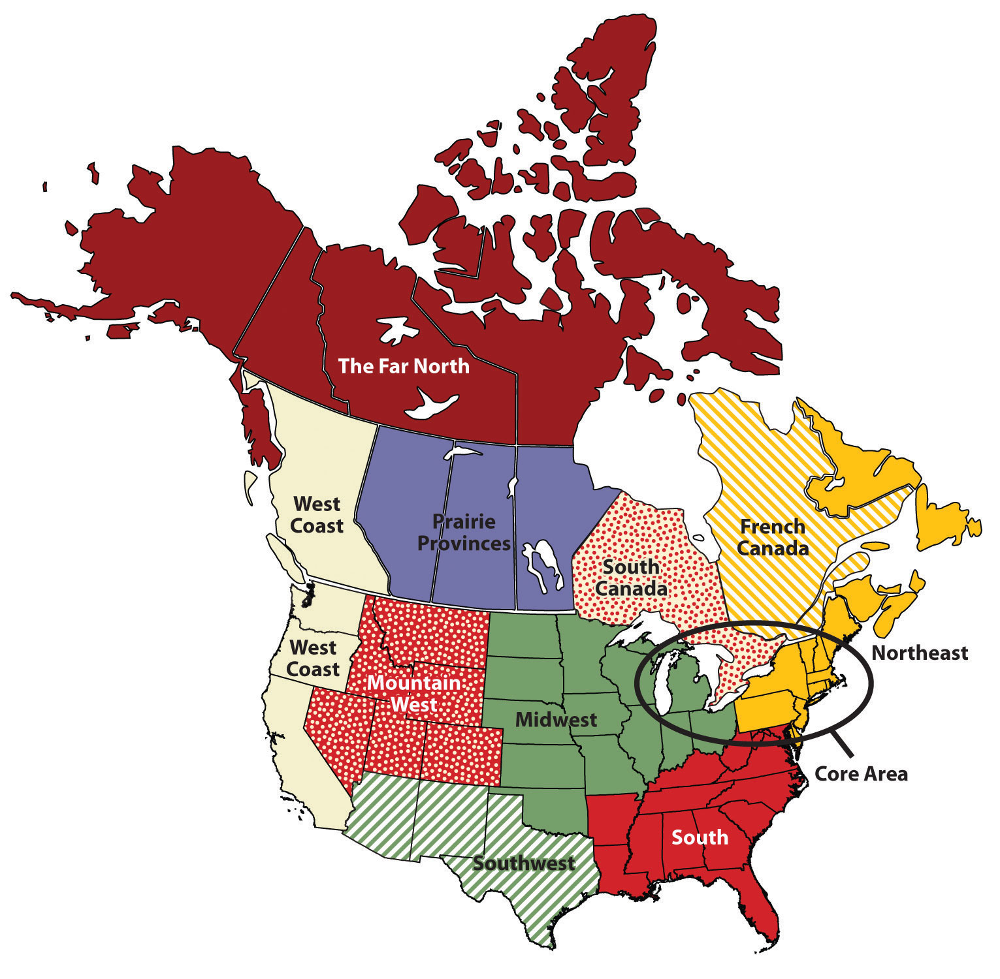The Northeastern Core includes the upper Midwest (Illinois, Indiana, Ohio, and Michigan); the mid-Atlantic states of Pennsylvania, New York, Maryland, and New Jersey plus northern Virginia; and the southern New England states of Connecticut, Rhode Island, and Massachusetts. It also includes southern Ontario, Canada’s capital (Ottawa), and its largest city (Toronto). The physical environments of the Northeastern Core are quite diverse, including the northern Gulf-Atlantic Coastal Plain, the northern Appalachians, and the area surrounding the Great Lakes. This region, anchored by North America’s largest metropolis, New York, is the economic heart of the United States and Canada and home to more than a third of each country’s population. The megalopolisThe continually built-up area from Washington, DC, to Boston.—the built-up area from Washington, DC, to Boston—is part of this region. The core region contains the Manufacturing/Rust Belt, which was once the main manufacturing region for North America but suffered decline with the advent of the information age. The core region hosts the headquarters of countless corporations, banks, financial markets (e.g., Wall Street), universities (from community colleges to the Ivy League), cultural institutions (e.g., Broadway, world-class museums, dance and music organizations), and even global organizations such as the United Nations.
Figure 4.28 Megalopolis
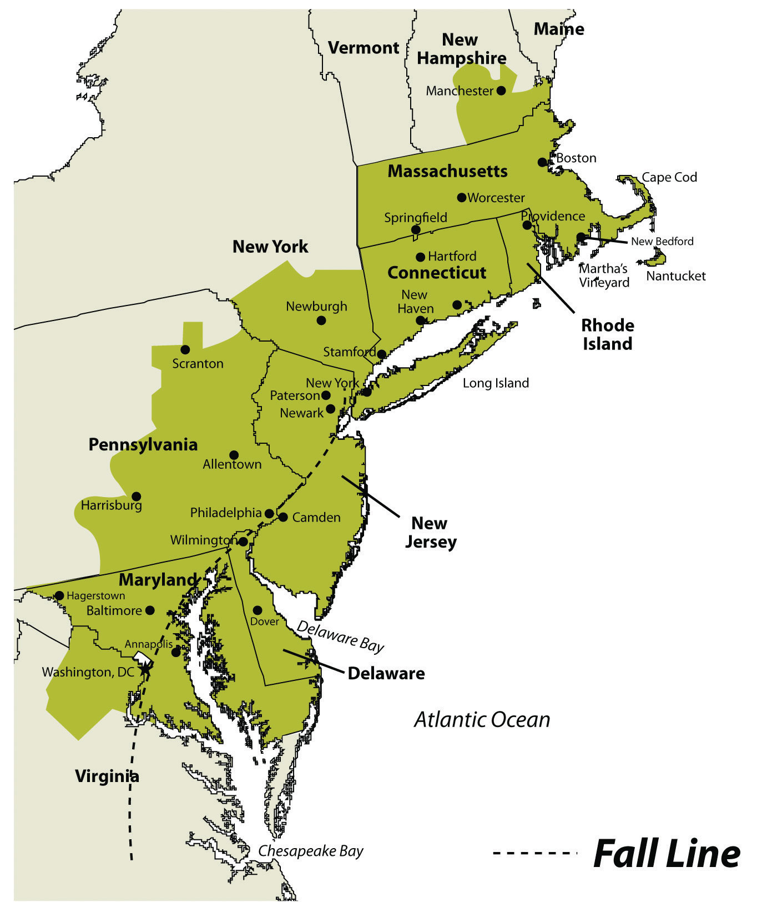Figure 4.29
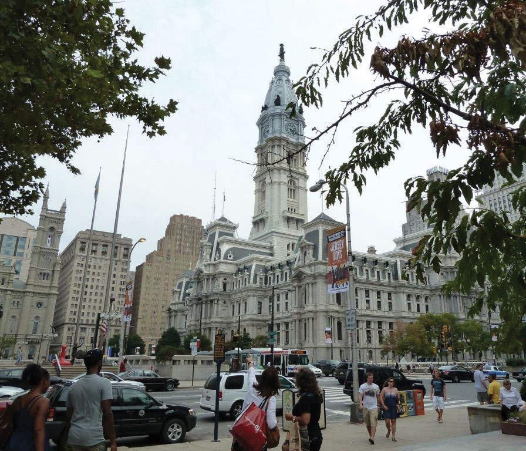Downtown Philadelphia’s city hall is an example of the urban qualities of the megalopolis that extends from Boston to Washington, DC.
Source: Photo courtesy of M. Berglee.
This large region includes geographic swaths of both wealth and economic suffering. Eight of the United States’ ten wealthiest counties are in this region, most of them in the Washington, DC, area, and a number of billionaires live in New York City. Meanwhile, cities such as Detroit and Cleveland have suffered from deindustrialization and have experienced a major population decline since the 1950s. Detroit, for instance, has lost 61 percent of its population since 1950, and the decline continues. The city decreased in population by 25 percent just between 2000 and 2010. While manufacturing is not dead in the Northeastern Core, heavy industry has been in long-term decline.
New England and the Canadian Maritimes overlap with the Northeastern Core because its major city—Boston—is considered the northern edge of the megalopolis. South of Boston, the low-lying states of New England were the center of colonial settlement in the region and were the birthplace of America’s Industrial Revolution. Southern New England began as an agricultural and fishing colony, and as industry developed in the nineteenth century, the region attracted European immigrants from Ireland, Italy, and elsewhere to work in its factories. The highly skilled workforce helped maintain a strong economy in southern New England, although there have been times of increased unemployment and economic hardship. Today the region has a more diverse economic base, including recreation and tourism, finance, telecommunications, and health care. The mountains of western New England have been particularly attractive for the development of ski resorts, and the coasts of New England are popular for summer vacationing.
As you move north from Boston, the terrain becomes more rugged and the soil less fertile. There are fewer economic reasons for people to live in northern New England, and the states of Vermont, New Hampshire, and Maine have always been less densely populated than the southern New England states. Maine is the least densely populated state in this region; about 90 percent of its land is forested, making it the most forested of the fifty United States. The vast Empty QuarterLand in western Maine that has virtually no inhabitants but a robust forestry industry. in western Maine consists of five million acres of privately owned forest and no permanent human inhabitants. Maine’s leading economic activity is manufacturing, and the bulk of it is oriented around paper and other wood products.
Northern New England transitions to the even more rugged and remote uplands of the Canadian Maritimes: New Brunswick, Nova Scotia, Prince Edward Island, and Newfoundland and Labrador. The soil quality is quite poor, as glaciers removed most of it during the various ice ages. The region has a harsh climate and is removed from the major population centers of Canada and the eastern United States. The Maritime Provinces have always been oriented to the sea. Fishing and other sea-oriented businesses have historically been strong here, but in recent decades overfishing of the North Atlantic has caused a decline in the fishing economy. Tourism has been increasing as a source of revenue, especially in places such as Prince Edward Island, in which tourism is the dominant economic activity. Newfoundland, including Labrador, is Canada’s poorest province.
West of the Canadian Maritimes lies the province of Quebec, the heart of which is the St. Lawrence River valley, a lowland separating the Appalachian Mountains to the south from the inhospitable Canadian Shield to the north. As explained in Section 4.4.3 "British versus French Canada", France was the first European country to colonize the coastal regions of what is now Canada, the St. Lawrence River Valley, most of the land surrounding the Great Lakes, and the Ohio and Mississippi River valleys, south to the Gulf of Mexico. Although Great Britain obtained all that land from France in 1763 following the French and Indian War, enough French inhabitants occupied part of that territory that the region did not automatically become English speaking. The core of French Canada today is the St. Lawrence Valley from Montreal to the Atlantic coast and west of Montreal to Ottawa and north to the Hudson Bay. These French speakers, the descendants of the early French settlers, created a vibrant French-Canadian culture. About 21 percent of Canadians speak French as their mother tongue, including about 80 percent of Canadians living in the province of Quebec.
Throughout most of its history, the people of Quebec have been rural farmers, eking out a living on less-than-ideal land in a place with a short growing season. One unique characteristic of the farms in French Canada is their size and shape. Early on, the farms were laid out as long lotsFarms in French Canada that were about ten times as long as they were wide., maximizing the number of farms that would have access to the transportation artery—usually a river, but sometimes a road. Each farm was about ten times longer than it was wide and had a small access point to the river, some fertile riverfront land, and a woodlot at the rear of the farm. This land-use pattern was common throughout French Canada and can even be seen today in the United States in former French colonies such as Tennessee and Louisiana.
Figure 4.30 Long Lot Farms Typical in French Canada
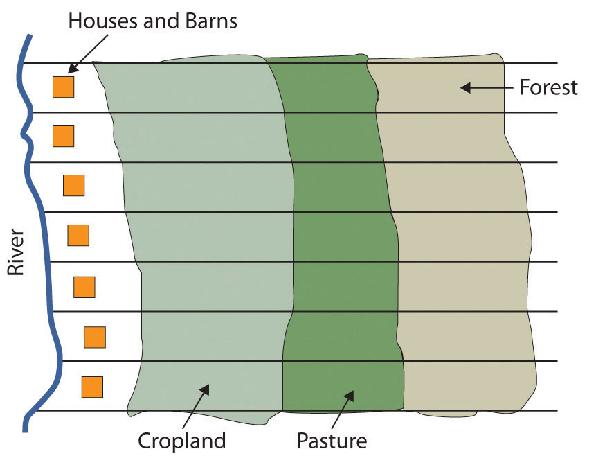Source: Image courtesy of E. Ratajeski.
Since then, Quebec’s economy has developed to include a manufacturing sector (fueled by abundant hydroelectricity), tourism, and a variety of tertiary and quaternary industries. Montreal, Canada’s second-largest metropolitan area with 3.9 million residents, is the largest French-speaking city in the Western hemisphere. It developed as the region’s most important city in the mid-nineteenth century, as it controlled access through the St. Lawrence River and the Great Lakes. It became a diverse industrial center, with oil refineries, steel mills, flour and sugar refineries, and shop yards for railroad companies. Montreal attracted English speakers as well as the local Francophones, and at times in its history it has even had more English speakers than French speakers, despite being surrounded by a Francophone countryside. Most of northern Quebec is sparsely populated because of the lack of quality soil for agriculture, but a paper and pulp industry based on its forests has developed over the twentieth century, as well as hydroelectric power generation.
The South includes the entire southeastern portion of the United States from Kentucky south to Louisiana, east to Florida, and north to Virginia. The South consists of most of the Gulf-Atlantic Coastal Plain and the southern portion of the Appalachian Highlands.
Before the Civil War, the coastal plain was dedicated to plantation agriculture using African slave labor. Land not used for plantation crops such as tobacco, cotton, and rice was typically farmed by poor whites and later by poor blacks. Some were sharecroppers, while others farmed their own small plots, especially on the lesser-quality land in Appalachia. The South had little urbanization or industrialization at the time of the Civil War. Well into the twentieth century, the region remained rural and economically deprived.
Figure 4.31
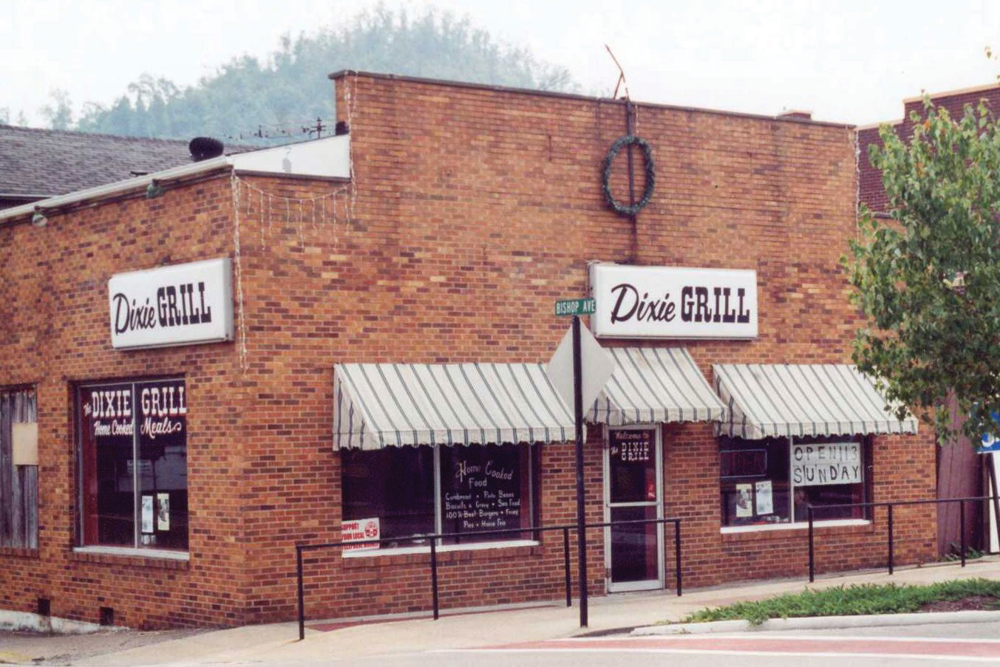Names often reflect the cultural region of their location. Business names with “Dixie” in them can be found throughout the South. The Dixie Grill restaurant is located in Morehead, Kentucky.
Source: Photo by R. Berglee.
Coal mining was a major source of employment in places such as West Virginia and eastern Kentucky for the first two-thirds of the twentieth century, but increased mechanization of mining methods, as well as new mining techniques such as mountaintop removal mining, decreased the number of miners needed, even as coal production increased.
The Appalachian South is perennially plagued by high unemployment, poverty, and difficult social conditions. Other areas of the rural South are also among the poorest in the nation, including the Mississippi Delta and the lower Mississippi River valley. Despite the continued swaths of poverty in the South, parts of the region have prospered in the past generation as Sun Belt migrants have moved to southern places such as Atlanta, Charlotte, Tampa, Miami, and dozens of smaller cities. This has fueled a period of urbanization and economic growth, and the newfound prosperity has helped integrate the South into the nation’s economy.
The center of the continent contains a relatively level agricultural region: the Midwest and the Great Plains. This land includes some of the most fertile agricultural land in the entire world and has been dubbed America’s breadbasket. The climate gets progressively more arid as you move to the west within this region, and the type of agriculture changes with the decrease in precipitation. Closer to the Rocky Mountains, the land is typically used for raising cattle, but enormous grain farms are found where water is available (especially through irrigation). The water for irrigation comes from the continent’s largest aquifer, the Ogallala AquiferOne of the world’s largest aquifers, it lies under the Great Plains states and supplies water for irrigating the rich farmland on the surface. This aquifer is declining in size each year.. Water is often pumped to the surface using a system called center pivot irrigationA system of crop irrigation in which the irrigation machinery rotates from a center point, creating circular fields. Center pivot irrigation was used in the Great Plains to irrigate crops with water from the Ogallala Aquifer.. The heart of the spring wheat belt is North Dakota, and the crop is also common in eastern Montana and in Canada’s Prairie Provinces of Alberta, Saskatchewan, and Manitoba. Winter wheat is common in Kansas and surrounding states. Farther to the east, where precipitation is more abundant, is the Corn Belt, focused in Iowa and Illinois.
Figure 4.32 Acres of Corn Harvested for Grain as a Percentage of Harvested Cropland Acreage, 2007

This map shows the extent of the Corn Belt.
Source: Map courtesy of US Department of Agriculture, http://www.agcensus.usda.gov/Publications/2007/Online_Highlights/Ag_Atlas_Maps/Crops_and_Plants/Field_Crops_Harvested/07-M165.asp.
Figure 4.33 Satellite Image of Corn, Sorghum, and Wheat Fields in Southwestern Kansas
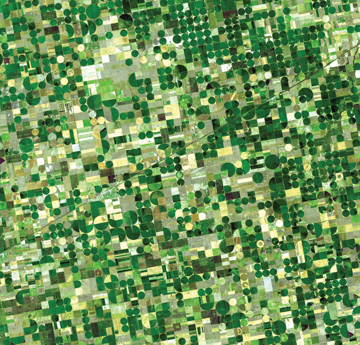The circular fields are between a half-mile and mile in diameter, and are characteristic of fields that use center-pivot irrigation.
Source: Photo courtesy of NASA/GSFC/METI/ERSDAC/JAROS and U.S./Japan ASTER Science Team, http://earthobservatory.nasa.gov/Newsroom/NewImages/images.php3?img_id=17006.
The dominant city in this region is Chicago, which developed as a market town for the livestock and grain produced in the surrounding states and was linked to its hinterland through a complex network of rail lines. In fact, nearly all the major cities of this region developed as places for the buying, selling, and processing agricultural products. Today the Midwest and the Great Plains remain the most important food-producing areas in North America, although as agriculture has become increasingly mechanized and farms have gotten larger, the number of farmers has decreased. This region, especially the Great Plains, is experiencing a period of long-term population decline and aging.
The states of Texas, New Mexico, and Arizona are considered the Southwest. The climate of the Southwest is more arid and receives a high amount of sunlight throughout the year. Desert conditions are integrated with higher elevations in the mountainous areas. Eastern Texas receives more rainfall from the Gulf of Mexico, and western Texas and the states of New Mexico and Arizona are quite arid and receive less rainfall. These conditions are more favorable to cattle ranching than to other agricultural activities. Large farming operations exist where water is available for irrigation. The warmer climate has been attractive for development and people emigrating from the colder regions of the north.
Figure 4.34 Typical Home in a Phoenix Suburb, Where Water Is a Valued Commodity
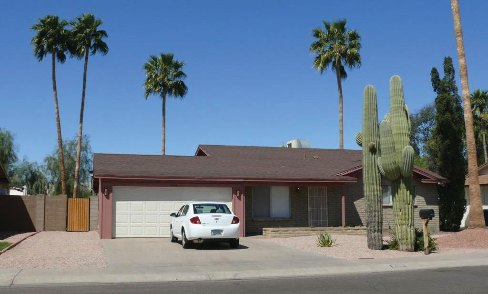There is no grass to mow, and cactus and palm trees are common.
Source: Photo by R. Berglee.
The Southwest has a strong Hispanic heritage and was part of Spain’s Mexican colony before England established colonies on the East Coast (the first Spanish settlers arrived in New Mexico in 1598). All three states have a large contingency of Hispanic residents, some of whom have descended from early pre–United States settlers, while others have come into the United States more recently across the long desert border between Mexico and the United States. According to the 2010 census, about 46 percent of New Mexico’s population was Hispanic or Latino, and in Texas and Arizona the figures were 37 percent and 30 percent, respectively.“State & County QuickFacts,” US Census Bureau, http://quickfacts.census.gov/qfd/index.html.
In Arizona, strong centrifugal forces have been in play because of its tough legal measures against illegal immigration. This issue exposes the social rift between the more European population of the state and the Hispanic immigrants. In 2008, the US Department of Homeland Security’s Office of Immigration Statistics estimated that Arizona had one of the fastest-growing illegal immigrant populations in the country at 8.4 percent of the population.Michael Hoefer, Nancy Rytina, and Bryan C. Baker, “Estimates of the Unauthorized Immigrant Population Residing in the United States: January 2008,” Department of Homeland Security, accessed September 20, 2011, http://www.dhs.gov/xlibrary/assets/statistics/publications/ois_ill_pe_2008.pdf. This was the second-highest percentage of undocumented residents in the country, after Nevada. In April 2010, the New York Times reported that Arizona’s governor signed the nation’s toughest bill on illegal immigration into law, designed to identify, prosecute, and deport illegal immigrants.Randal C. Archibold, “Arizona Enacts Stringent Law on Immigration,” New York Times, April 23, 2010, accessed September 20, 2011, http://www.nytimes.com/2010/04/24/us/politics/24immig.html. At the same time, Reuters reported that the when the bill was debated in the Arizona senate, the number of illegal immigrants was listed at 10 percent of the population.“Arizona Passes Tough Illegal Immigration Law,” Reuters, April 19, 2010, accessed September 20, 2011, http://www.reuters.com/article/2010/04/19/us-immigration-usa-arizona-idUSTRE63I6TU20100419. Some opponents of the tough illegal immigration laws claimed that law enforcement officials would use racial profiling to target Hispanic residents, and the federal government took the state to court to halt its enforcement.
The Southwest also has a strong Native American presence, especially in New Mexico and Arizona. Twenty-one federally recognized tribes with more than 250,000 people (4.9 percent of the state’s population) live in Arizona, and their reservations and traditional communities make up more than one-fourth of the state’s land. The Navajo tribe is the largest in the United States, with more than 100,000 members in Arizona alone and others in surrounding states. The considerable Native American and Hispanic population in the Southwest means that non-Hispanic whites make up a minority of the population in New Mexico and Texas.
Figure 4.35 Navajo Dancer Performing the Eagle Dance
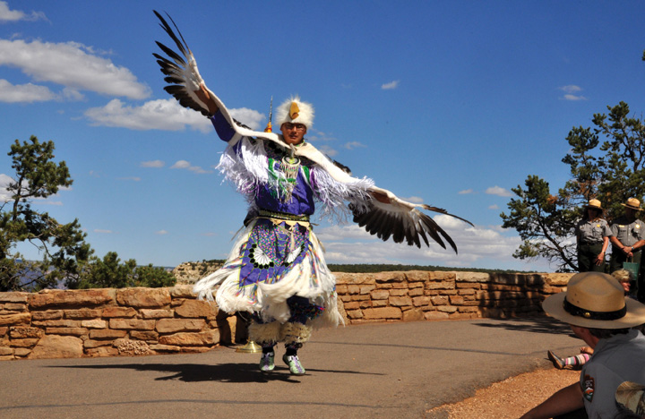One of the Pollen Trail Dancers, a Navajo group near Joseph City, Arizona, performs the Eagle Dance on September 21, 2010, on the scenic South Rim of Grand Canyon National Park between Hopi House and Verkamp’s Visitor Center.
Source: Photo courtesy of Michael Quinn and Grand Canyon NPS, http://www.flickr.com/photos/grand_canyon_nps/5128920480.
The three Southwestern states have been recipients of Sun Belt migrations over the past few decades, as people have moved to the Southwest for tertiary-sector jobs and for the region’s warm climate. The region is quite urbanized, and most of the new migrants are moving to cities. Three-fourths of Arizona’s population live in the Phoenix or Tucson metropolitan area. The most populous metropolitan area in the Southwest is Dallas–Fort Worth, Texas, with 6.4 million residents in 2010, making it the fourth-largest metropolitan area in the United States. The Houston metropolitan area is not far behind with 6.1 million residents. The economy of Texas used to be based on oil and natural gas, but it has since become more diversified. Residents of these cities work in high-tech manufacturing, health care, business, and information. One of the most famous high-tech industries in Texas is space: Houston is home to the National Aeronautics and Space Administration’s (NASA) Lyndon B. Johnson Space Center, where astronauts and thousands of others work in the space industry.
From the Rocky Mountains to the Sierra Nevada and the Cascades and the Intermontane Basins and Plateaus in between, this part of North America has gone from the old Wild West to an area of rapid economic and population growth. The region encompasses western Colorado; western Wyoming; western Montana; Idaho; Nevada; Utah; the eastern portions of Washington, Oregon, and California; and the southern portion of the Canadian Rockies.
Figure 4.36 Rocky Mountains of Western Montana on US Highway 2
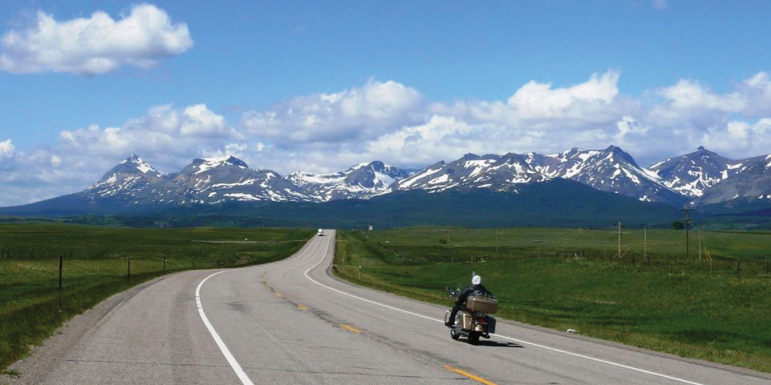Source: Photo by R. Berglee.
The population of the Mountain West is growing much faster than the population of the United States as a whole. For example, Nevada’s population grew 32.3 percent from 2000 to 2009, which is more than three times as much as the United States as a whole (9.1 percent). All US states in this region, except for Montana, grew at faster rates than the US average. Utah grew 24.7 percent, Idaho grew 19.5 percent, and Colorado grew 16.8 percent. What is fueling this growth? It is part of the larger pattern of Americans flocking to the Sun Belt, searching for an attractive climate and lifestyle. Jobs have been created in recreation (gambling, skiing), in high-tech firms, and in other tertiary sector industries. Many of the migrants come from southern California because the housing in the Mountain West is more affordable and the region is much less crowded. Nearly all the growth is occurring in urban and suburban areas.
However, the rapid growth of the West since 1990 has come at a cost. In some areas the large population is putting a strain on physical resources, such as water. Water is a hot-button political issue, particularly in the more arid states such as Nevada. Las Vegas, for example, is a desert city that gets 90 percent of its water from a Colorado River reservoir: Lake Mead. This water comes from snowmelt in the Rocky Mountains far to the east, and due to drought and high water demand, Lake Mead’s water level has been dropping. If current patterns persist, Las Vegas will have a water crisis soon. The water shortage is happening even though Las Vegas has managed to reduce per capita water usage by raising prices for water and creating incentives to remove grass lawns. Las Vegas recycles 94 percent of all sewage water, which is the highest rate in the United States.
As the West’s population increased rapidly, the region’s urban areas became part of the real estate bubble of the early 2000s. Real estate prices grew and the housing industry built one residential subdivision after another in the suburbs surrounding cities such as Las Vegas, Denver, and Salt Lake City. However, in the late 2000s the real estate market collapsed in many parts of the country, and Western cities were hard hit. As of early 2011, three of the five states with the highest foreclosure rates were in this region (Nevada, Utah, and Idaho), and the others were bordering states (Arizona and California).
Figure 4.37 Urban Growth in Las Vegas, Nevada, from 1984 to 2009
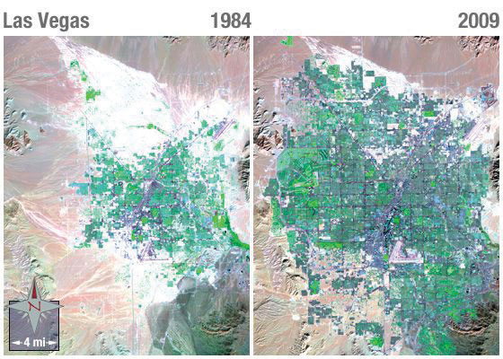Notice the dark purple of city streets and the bright green of irrigated vegetation.
Source: Images courtesy of NASA, http://landsat.gsfc.nasa.gov/images/archive/e0018.html.
The Pacific Coast includes the coastal portions of California, Oregon, and Washington, plus the southwestern portion of British Columbia in Canada. This region is typically thought of as two subregions: California and the Pacific Northwest. The two areas are quite different from each other in terms of climate and economy. However, both areas are part of the so-called Ring of FireThis phrase describes the perimeter of the Pacific Ocean and the area’s frequently occurring volcanoes and earthquakes. that encircles the Pacific Ocean. The Ring of Fire is a zone of earthquakes and volcanic eruptions that occur near where the Pacific tectonic plate meets the surrounding plates. In the United States, two areas of concern are the San Andreas FaultA fault between the Pacific and the North American continental plates that runs about 810 miles through California and is the cause of many earthquakes in the region. in California and Mount St. HelensThe volcano in the US state of Washington that erupted in 1980. in Washington. The 1906 earthquake that destroyed San Francisco was a result of activity on the San Andreas Fault, and scientists predict that strong earthquakes will reappear along the fault in the future. Thousands of small earthquakes occur along the fault every year. Mount St. Helen’s is a volcano in the Cascades that erupted in 1980, killing fifty-seven people and destroying hundreds of square miles of forest.
Figure 4.38 The San Andreas Fault
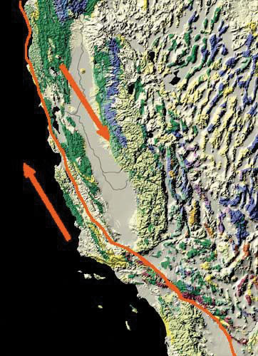The Pacific tectonic plate is moving northward relative to the North American plate.
Source: Image courtesy of USGS, http://nationalatlas.gov/articles/geology/features/sanandreas.html.
The Pacific Coast represents a large population center a continent away from what we consider the North American core. Most of the region’s population is urban, and Los Angeles and its metropolitan area is by far the largest area of settlement. Twelve percent of the US population lives in California (thirty-seven million people), and the greater Los Angeles metropolitan area has nearly eighteen million people. Los Angeles is the second-largest US city after New York. Los Angeles is the quintessential automobile city. It developed into a major city in the mid-twentieth century at the time that automobile ownership had become common, and people who lived in the area tended to move to suburbs that were connected to each other by an extensive highway system. Los Angeles is a highly decentralized city, unlike cities in other parts of North America that formed during other transportation regimes.
The Pacific Coast region is also famous for its agriculture. California’s Central Valley lies between the Coast Ranges to the west and the Sierra Nevada to the east and is among the most productive agricultural areas in the world. The irrigated farmland in the valley produces all types of nontropical crops and is the largest US producer of tomatoes, grapes, almonds, and other foods. When other parts of the country are still frozen in the winter months, the fields of the Central Valley are already producing bountiful harvests. California is also famous for its wine production, especially in Napa Valley near San Francisco.
Figure 4.39 The Pacific Ocean from Venice Beach in Los Angeles
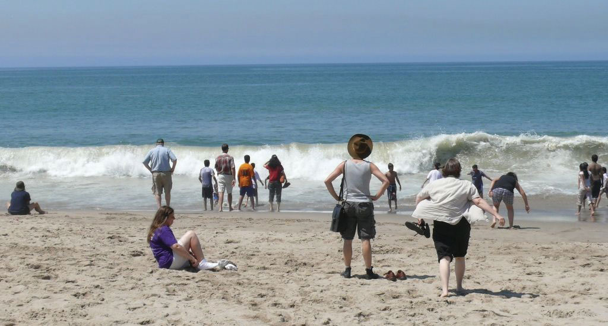Source: Photo by R. Berglee.
Besides agriculture, the economic base of the Pacific Coast is quite diverse and rich. If it were an independent country, California would be the world’s sixth-largest economy. Los Angeles is considered the capital of the US entertainment industry, and other major industries include aerospace, manufacturing, and foreign trade. The port of Los Angeles is the busiest in North America, receiving shipments of goods from China and other Asian countries. Silicon Valley, near San Francisco, is a key area for high-tech research and Internet commerce. The Pacific Northwest is home to major corporations such as Boeing (whose headquarters recently moved to Chicago), Microsoft, and other famous companies such as Starbucks, Amazon.com, REI, T-Mobile, Costco, and Eddie Bauer. One of the richest Americans, Bill Gates, lives near Seattle.
Across the border to the north, Vancouver is Canada’s third-largest metropolitan area with over two million residents. Vancouver is unlike any other city in North America. Nearly one-third of its residents are of Chinese origin, and more than half its population speak a language other than English at home. Vancouver began as a logging town but developed into its position as the Asian gateway to Canada because of its port, the busiest in Canada. Vancouver is a popular location for the film industry and is sometimes dubbed as “Hollywood North.” It is also growing in the biotechnology and software industries.
The North is the least densely populated of any region in North America due to its brutally cold winters, short growing season, and poor soils. It includes the boreal forests of the upper Great Lakes region and the Canadian Shield and the territory to the north of the tree line that extends beyond the Arctic Circle. Physically, this region is immense, including the state of Alaska plus most of Canada. The climate is similar to that of Russia: cold continental and arctic climates, arctic air masses swooping down from the north, and long winters. Most inhabitants of the northern portions of North America live in the forested areas rather than in the frozen Arctic.
Two groups of people live in this region. First are the native peoples who have always lived there. They are small in number and traditionally make a living by hunting and fishing. More recently, the native populations such as the Inuit and the First Nations in Canada subsist by combining wage employment with their traditional means of living off the land. American Indians or Alaskan natives make up about 15 percent of Alaska’s population, for a total of roughly 106,000 people. In Canada’s Northwest Territories, First Nations people make up just over half the population, but the total population is quite small—only about 41,000 in the entire territory. In Nunavut, the native population is about 85 percent of the total 30,000 residents, living in a territory the size of Western Europe.
Figure 4.40 Radar Station at Point Lay, Alaska
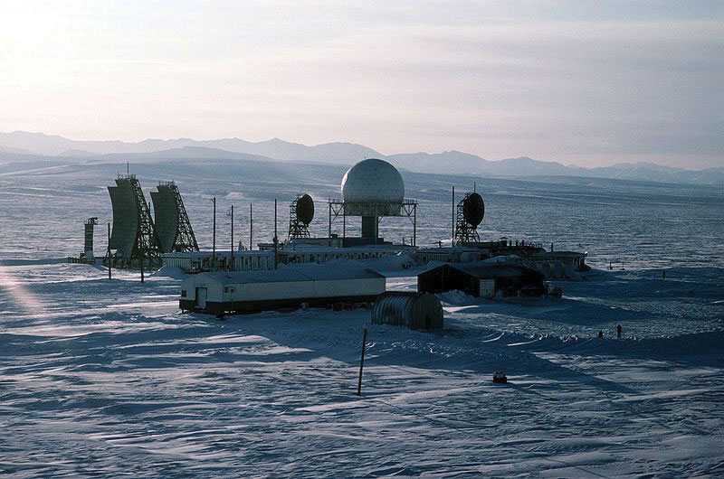Source: Photo courtesy of US Air Force, TSgt Donald L. Wetterman, http://commons.wikimedia.org/wiki/File:Point_Lay_Alaska_DEW_Line.jpg.
The other residents are more recent immigrants who are there to exploit the land’s natural resources. The economy is dominated by the primary economic sector: forestry, oil and natural gas extraction, and mining. In the Canadian Shield, metallic ores such as copper, gold, nickel, silver, and uranium are found in the rocks and diamond mines are in operation, as are mines producing rare earth elementsA group of seventeen metallic ores that are often used in high-tech applications. used in computer screens, electric car batteries, and computer hard drives. These elements include metals such as cerium, terbium, dysprosium, and neodymium. Alaska is an oil-producing state, and the decision of whether to open additional areas of Alaska’s Arctic to oil drilling remains controversial and uncertain.
Identify the following key places on a map: